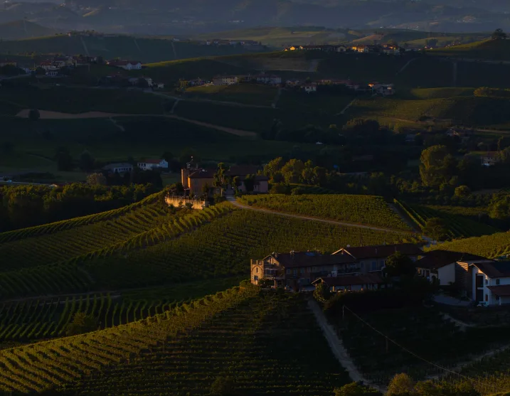
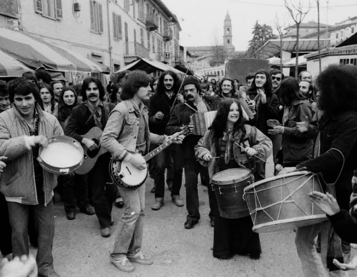
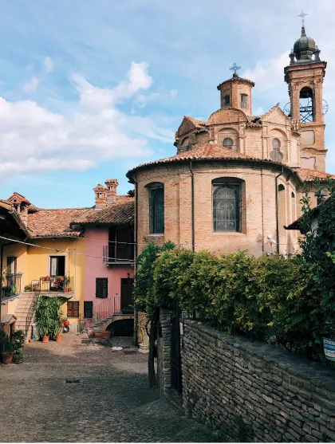

TRIP DESCRIPTION (OCTOBER 26-30, 2023 / 4 NIGHTS)
Every fall food and wine enthusiasts descend upon Piedmont, home to the rare white truffle as well as Nebbiolo, a grape variety cultivated for Barolo and Barbaresco, two of the most elegant wines of all.
Piedmont, in Italy’s northwestern region, sits at the foot of the Alps, in the Langhe, an area dotted with vineyards, oak woodlands and hazelnut groves. Fall is ideal for visiting the region during the harvest, when its rolling hills turn a fiery red and orange and truffle hunters set out to uncover this elusive, earthly delight.
During this four day experience, guests will learn everything about the white truffle— from its ideal, mottled texture to its heady scent. Guests will embark on a traditional hunt with truffle-sniffing dogs as well as attend the White Truffle Fair in Alba. Shop for the best truffles as well as local cheeses, chocolate and the famous hazelnuts of Piedmont and chestnuts from Cuneo. Later shave your own prized fungus over pizza or fresh tajarin, the local egg pasta tossed simply in butter.
Apart from being Italy’s spiritual truffle capital, Piedmont boasts a wine heritage like no other Italian region, producing some of the world's most coveted wines using old world traditions. Another ancestral custom still celebrated here is Cante J’Euv, the singing of the eggs. This started during the last days of Lent, when the local peasants, who had little left in their larder, would visit the local farms at night and sing until they woke up the farmer, who would then give them some precious eggs to quiet them. Over the years, this has evolved into a favorite tradition in which locals stroll through the vineyards, eating and drinking and wishing for a good harvest. To celebrate, the clubhouse will experience the tradition with our own moveable feast under a full moon night.
Guests will stay at Dai Gresy, a recently restored farmhouse on the ridge of Monte Aribaldo, which connects Barbaresco and Treiso. The 11-room property, which has been in the well-respected vintner Dai Gresy family since 1650, who take a modern approach to sustainability, using natural and recycled materials as well as planting a biodiverse garden with rare fruit trees, wildflower and beehives.

PRICING DETAILS
-In order to confirm your reservation, a 50% non-refundable deposit is required at the time of the booking. The remaining balance will be charged 120 days prior to the beginning of the trip.
-Double Occupancy Room (2 people in 1 room): $ 7,850 per person
-Single Occupancy Room (1 person in 1 room): $10,730 per person

INCLUSIONS:
-Accommodations at Dai Gresy, privatized for exclusive use
-All tours and admission costs throughout the itinerary
-All meals throughout the itinerary
-All transportation throughout the itinerary
-Gratuities
EXCLUSIONS:
-Airfare
-Airport transfers
-Arrival and departure transfers
-Portage at airports
-Any visa or travel requirements for entry into Italy
-Travel Insurance
-Personal expenses